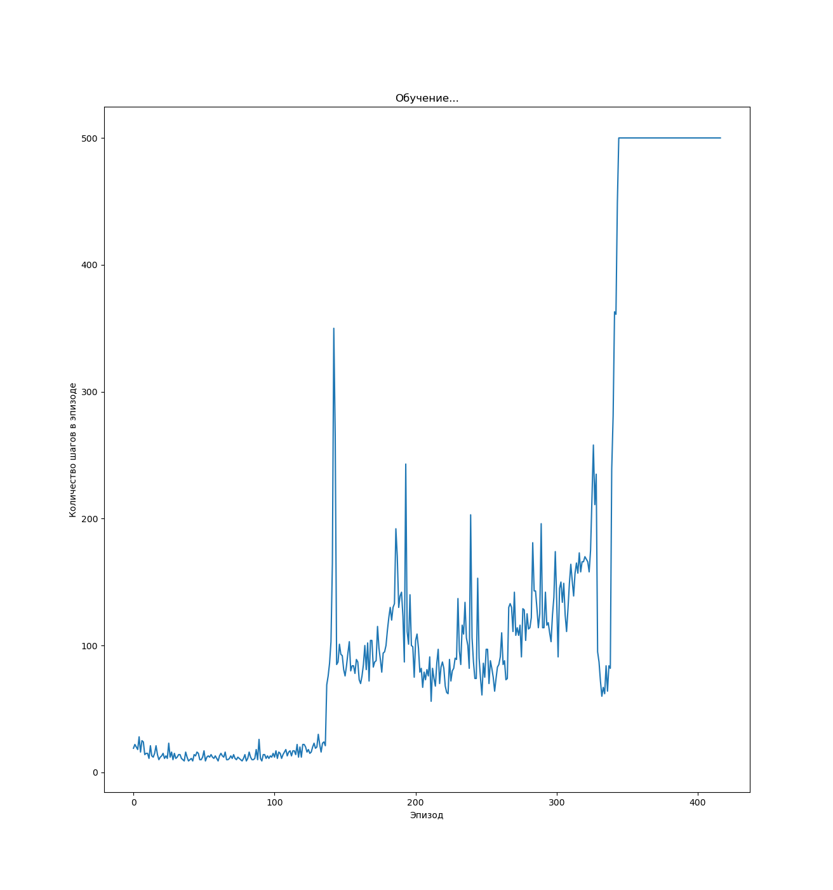
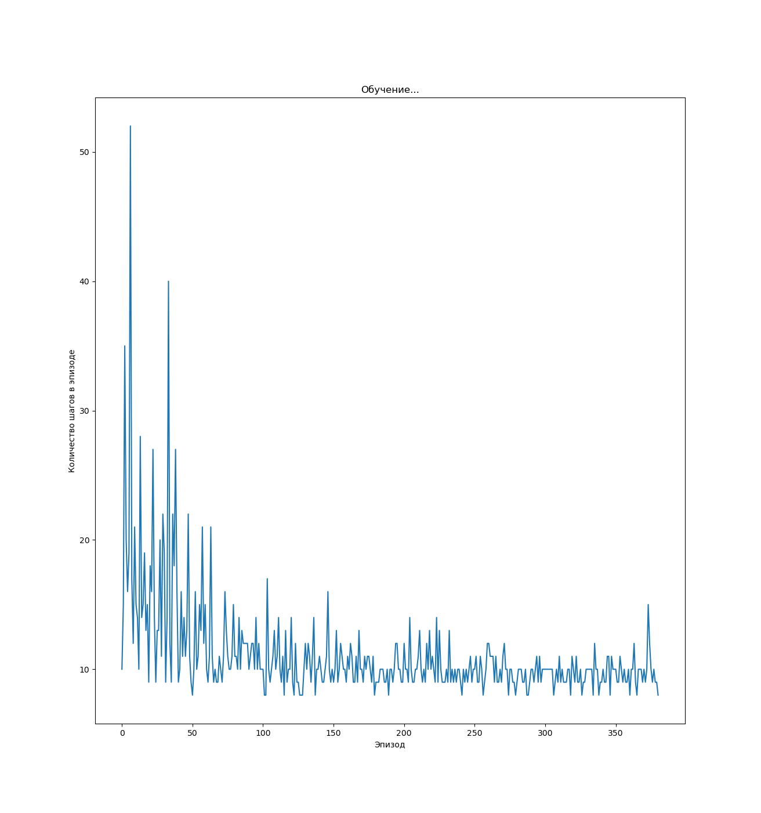
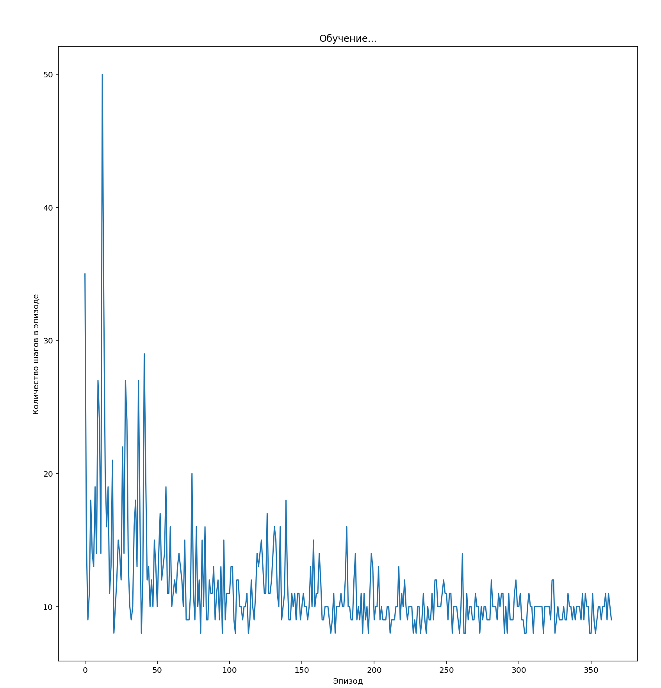
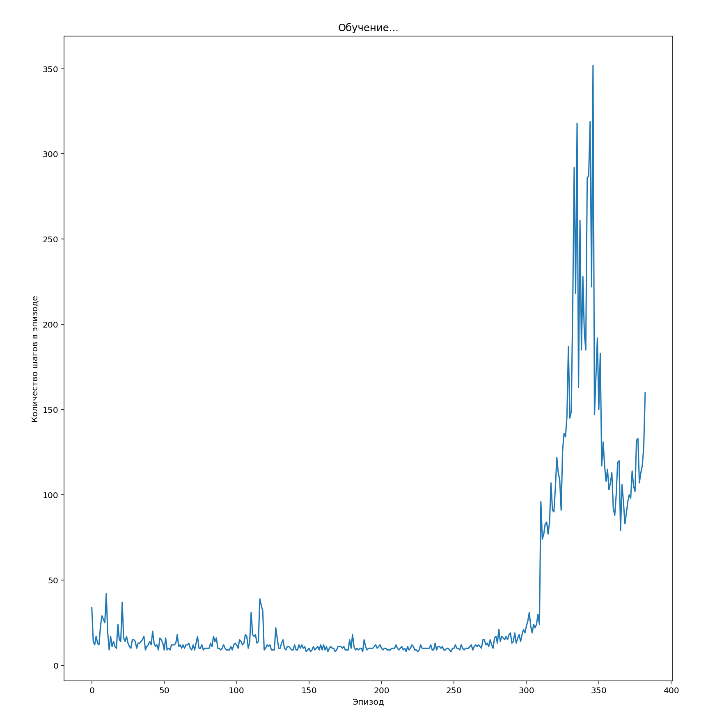
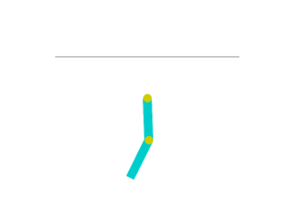
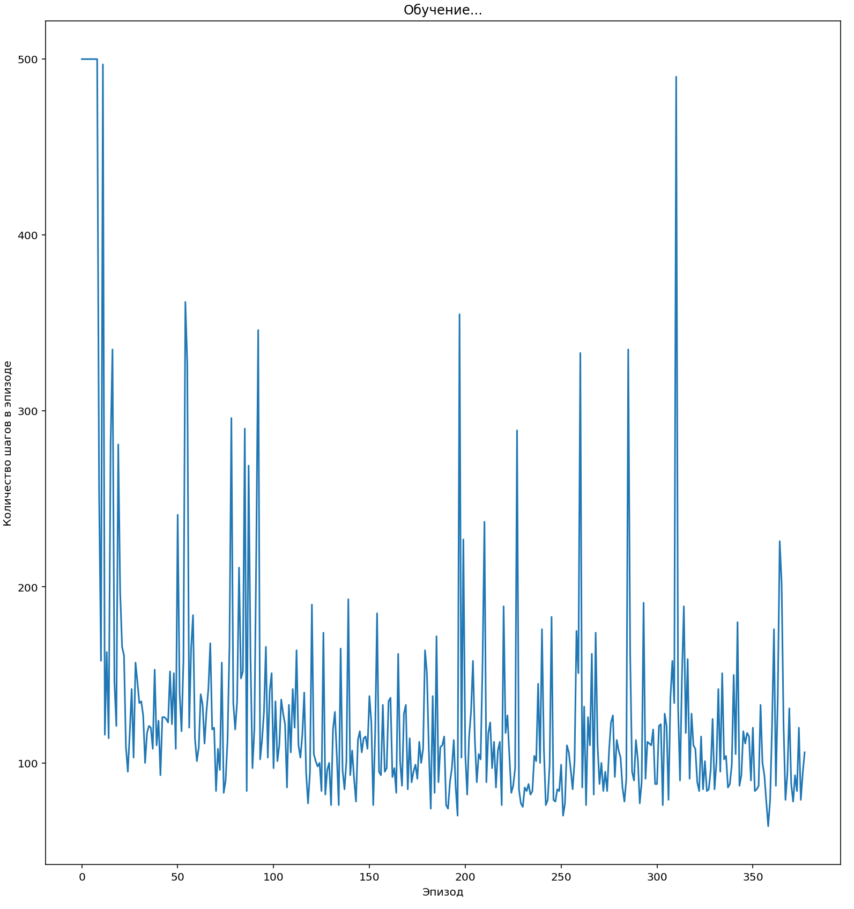
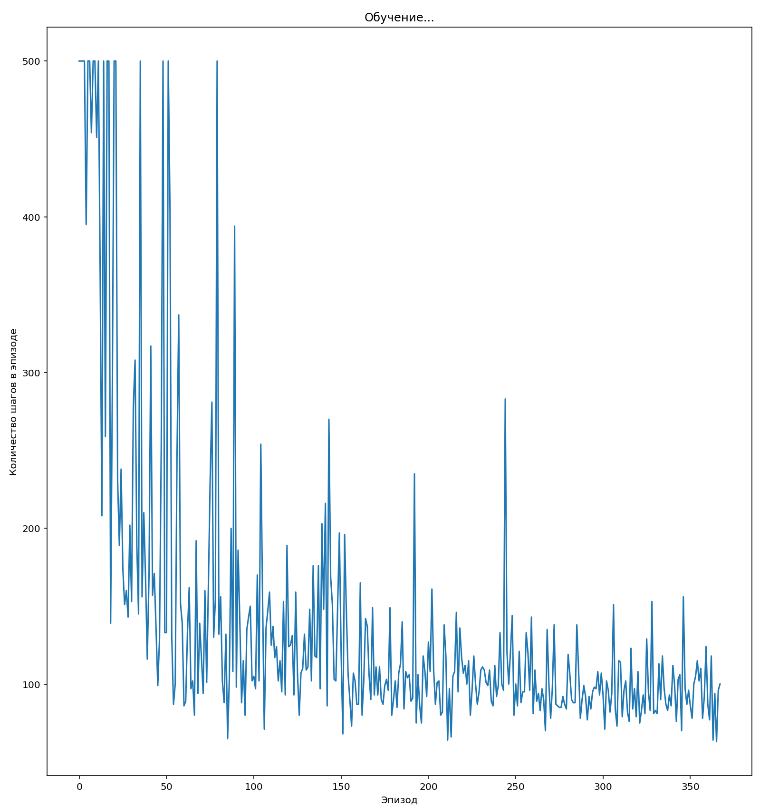

МОСКОВСКИЙ ГОСУДАРСТВЕННЫЙ ТЕХНИЧЕСКИЙ УНИВЕРСИТЕТ
им. Н.Э. Баумана
Факультет «Информатика и системы управления»
Кафедра «Систем обработки информации и управления»
Лабораторная работа №__3__
по дисциплине «Методы машинного обучения»
Тема:
«Обучение с подкреплением. Обучение на основе глубоких Q-сетей»
Вариант № 13
ИСПОЛНИТЕЛЬ: ____Пакало А. С.__
ФИО
группа ИУ5-22М ____________________
подпись
"__"_________2024 г.
ПРЕПОДАВАТЕЛЬ: ____Гапанюк Ю. Е._
ФИО
__________________
подпись
"__"_________2024 г.
Москва - 2024
__________________________________________________________
Задание
На основе рассмотренных на лекции примеров реализуйте алгоритм DQN. В качестве среды можно использовать классические среды (в этом случае используется полносвязная архитектура нейронной сети).
Выполнение
Исходный код программы:
import math
import random
from collections import deque, namedtuple
from itertools import count
import gym
import matplotlib.pyplot as plt
import torch
import torch.nn as nn
import torch.nn.functional as F
import torch.optim as optim
# Название среды
CONST_ENV_NAME = "Acrobot-v1"
# Использование GPU
CONST_DEVICE = torch.device("cuda" if torch.cuda.is_available() else "cpu")
HIDDEN_SIZE = 64
# Элемент ReplayMemory в форме именованного кортежа
Transition = namedtuple("Transition", ("state", "action", "next_state", "reward"))
# Реализация техники Replay Memory
class ReplayMemory(object):
def __init__(self, capacity):
self.memory = deque([], maxlen=capacity)
def push(self, *args):
"""
Сохранение данных в ReplayMemory
"""
self.memory.append(Transition(*args))
def sample(self, batch_size):
"""
Выборка случайных элементов размера batch_size
"""
return random.sample(self.memory, batch_size)
def __len__(self):
return len(self.memory)
class DQN_Model(nn.Module):
def __init__(self, n_observations, n_actions):
"""
Инициализация топологии нейронной сети
"""
super(DQN_Model, self).__init__()
self.layer1 = nn.Linear(n_observations, HIDDEN_SIZE)
self.layer2 = nn.Linear(HIDDEN_SIZE, HIDDEN_SIZE)
self.layer3 = nn.Linear(HIDDEN_SIZE, n_actions)
def forward(self, x):
"""
Прямой проход
Вызывается для одного элемента, чтобы определить следующее действие
Или для batch'а во время процедуры оптимизации
"""
x = F.relu(self.layer1(x))
x = F.relu(self.layer2(x))
return self.layer3(x)
class DQN_Agent:
def __init__(
self,
env,
BATCH_SIZE=128,
GAMMA=0.99,
EPS_START=0.9,
EPS_END=0.05,
EPS_DECAY=1000,
TAU=0.005,
LR=1e-4,
):
# Среда
self.env = env
# Размерности Q-модели
self.n_actions = env.action_space.n
state, _ = self.env.reset()
self.n_observations = len(state)
# Коэффициенты
self.BATCH_SIZE = BATCH_SIZE
self.GAMMA = GAMMA
self.EPS_START = EPS_START
self.EPS_END = EPS_END
self.EPS_DECAY = EPS_DECAY
self.TAU = TAU
self.LR = LR
# Модели
# Основная модель
self.policy_net = DQN_Model(self.n_observations, self.n_actions).to(
CONST_DEVICE
)
# Вспомогательная модель, используется для стабилизации алгоритма
# Обновление контролируется гиперпараметром TAU
# Используется подход Double DQN
self.target_net = DQN_Model(self.n_observations, self.n_actions).to(
CONST_DEVICE
)
self.target_net.load_state_dict(self.policy_net.state_dict())
# Оптимизатор
self.optimizer = optim.AdamW(
self.policy_net.parameters(), lr=self.LR, amsgrad=True
)
# Replay Memory
self.memory = ReplayMemory(10000)
# Количество шагов
self.steps_done = 0
# Длительность эпизодов
self.episode_durations = []
def select_action(self, state):
"""
Выбор действия
"""
sample = random.random()
eps = self.EPS_END + (self.EPS_START - self.EPS_END) * math.exp(
-1.0 * self.steps_done / self.EPS_DECAY
)
self.steps_done += 1
if sample > eps:
with torch.no_grad():
# Если вероятность больше eps
# то выбирается действие, соответствующее максимальному Q-значению
# t.max(1) возвращает максимальное значение колонки для каждой строки
# [1] возвращает индекс максимального элемента
return self.policy_net(state).max(1)[1].view(1, 1)
else:
# Если вероятность меньше eps
# то выбирается случайное действие
return torch.tensor(
[[self.env.action_space.sample()]],
device=CONST_DEVICE,
dtype=torch.long,
)
def plot_durations(self, show_result=False):
plt.figure(1)
durations_t = torch.tensor(self.episode_durations, dtype=torch.float)
if show_result:
plt.title("Результат")
else:
plt.clf()
plt.title("Обучение...")
plt.xlabel("Эпизод")
plt.ylabel("Количество шагов в эпизоде")
plt.plot(durations_t.numpy())
plt.pause(0.001) # пауза
def optimize_model(self):
"""
Оптимизация модели
"""
if len(self.memory) < self.BATCH_SIZE:
return
transitions = self.memory.sample(self.BATCH_SIZE)
# Транспонирование batch'а
# (https://stackoverflow.com/a/19343/3343043)
# Конвертация batch-массива из Transition
# в Transition batch-массивов.
batch = Transition(*zip(*transitions))
# Вычисление маски нефинальных состояний и конкатенация элементов batch'а
non_final_mask = torch.tensor(
tuple(map(lambda s: s is not None, batch.next_state)),
device=CONST_DEVICE,
dtype=torch.bool,
)
non_final_next_states = torch.cat(
[s for s in batch.next_state if s is not None]
)
state_batch = torch.cat(batch.state)
action_batch = torch.cat(batch.action)
reward_batch = torch.cat(batch.reward)
# Вычисление Q(s_t, a)
state_action_values = self.policy_net(state_batch).gather(1, action_batch)
# Вычисление V(s_{t+1}) для всех следующих состояний
next_state_values = torch.zeros(self.BATCH_SIZE, device=CONST_DEVICE)
with torch.no_grad():
next_state_values[non_final_mask] = self.target_net(
non_final_next_states
).max(1)[0]
# Вычисление ожидаемых значений Q
expected_state_action_values = (next_state_values * self.GAMMA) + reward_batch
# Вычисление Huber loss
criterion = nn.SmoothL1Loss()
loss = criterion(state_action_values, expected_state_action_values.unsqueeze(1))
# Оптимизация модели
self.optimizer.zero_grad()
loss.backward()
# gradient clipping
torch.nn.utils.clip_grad_value_(self.policy_net.parameters(), 100)
self.optimizer.step()
def play_agent(self):
"""
Проигрывание сессии для обученного агента
"""
env2 = gym.make(CONST_ENV_NAME, render_mode="human")
state = env2.reset()[0]
state = torch.tensor(state, dtype=torch.float32, device=CONST_DEVICE).unsqueeze(
0
)
done = False
res = []
while not done:
action = self.select_action(state)
action = action.item()
observation, reward, terminated, truncated, _ = env2.step(action)
env2.render()
res.append((action, reward))
if terminated:
next_state = None
else:
next_state = torch.tensor(
observation, dtype=torch.float32, device=CONST_DEVICE
).unsqueeze(0)
state = next_state
if terminated or truncated:
done = True
print("Данные об эпизоде: ", res)
def learn(self):
"""
Обучение агента
"""
cuda_is_available = torch.cuda.is_available()
print("Обучаемся с использованием cuda:", cuda_is_available)
if cuda_is_available:
num_episodes = 400
else:
num_episodes = 50
for i_episode in range(num_episodes):
# Инициализация среды
state, info = self.env.reset()
state = torch.tensor(
state, dtype=torch.float32, device=CONST_DEVICE
).unsqueeze(0)
for t in count():
action = self.select_action(state)
observation, reward, terminated, truncated, _ = self.env.step(
action.item()
)
reward = torch.tensor([reward], device=CONST_DEVICE)
done = terminated or truncated
if terminated:
next_state = None
else:
next_state = torch.tensor(
observation, dtype=torch.float32, device=CONST_DEVICE
).unsqueeze(0)
# Сохранение данных в Replay Memory
self.memory.push(state, action, next_state, reward)
# Переход к следующему состоянию
state = next_state
# Выполнение одного шага оптимизации модели
self.optimize_model()
# Обновление весов target-сети
# θ′ ← τ θ + (1 − τ )θ′
target_net_state_dict = self.target_net.state_dict()
policy_net_state_dict = self.policy_net.state_dict()
for key in policy_net_state_dict:
target_net_state_dict[key] = policy_net_state_dict[
key
] * self.TAU + target_net_state_dict[key] * (1 - self.TAU)
self.target_net.load_state_dict(target_net_state_dict)
if done:
self.episode_durations.append(t + 1)
self.plot_durations()
break
def main():
env = gym.make(CONST_ENV_NAME)
agent = DQN_Agent(env)
agent.learn()
agent.play_agent()
if __name__ == "__main__":
main()Результат
Протестируем работу алгоритма в разных классических средах.
CartPole
Проверим на среде CartPole. Тележку можно либо двигать влево, либо вправо - необходимо как можно дольше продержать бревно на ней в равновесии.
{kind=link}
Попробуем запустить алгоритм с исходными параметрами. 
Попробуем оптимизировать алгоритм, уменьшим количество слоёв до 2-х. 
Как видно, качество значительно ухудшилось.
Попытаемся подобрать количество нейронов на скрытых слоях. Уменьшим количество до 64. 
Уменьшим количество до 96. 
Как видно 3 слоя с 128 параметрами оказалось оптимальной комбинацией.
Acrobot
Проверим работу алгоритма на среде Acrobot. Можно толкать сустав либо влево, либо вправо. Можно оставить его впокое.
Необходимо выполнить обратную CartPole задачу: за наименьшее количество времени поднять его выше линии. 
Попытаемся подобрать количество нейронов в скрытом слое.
Попробуем 64: 
Попробуем 96: 
Вывод
Алгоритм на основе глубоких сетей прекрасно справился с разными задачами в разных средах. Изменение гиперпараметров не улучшило результат - нам повезло угадать их с самого начала: 3 слоя и 128 нейронов оптимальные. Увеличение слоёв или нейронов приведёт к усложнению модели и увеличению времени обучения. Уменьшение слоёв или нейронов - портит качество модели.